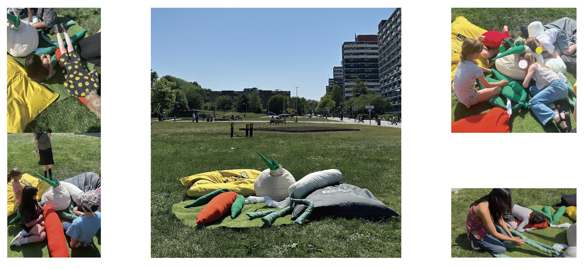
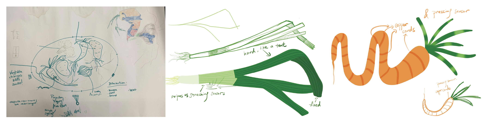
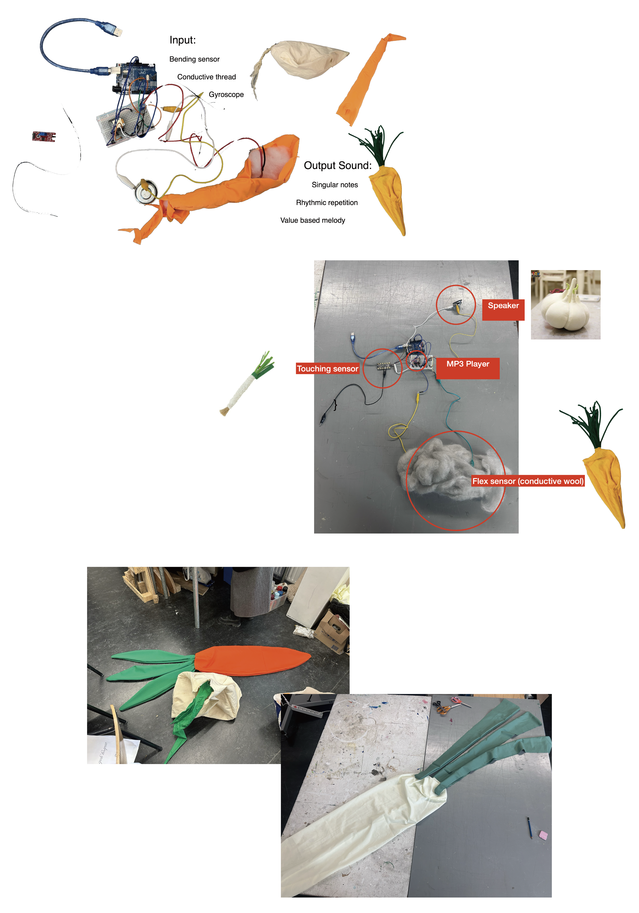

Our project is an interactive spatial space exploring tactile vegetables, connection between humans as well as
forming connection between and with non-human species.
Communication is happening non-verbal through a soundscape rooting in the physical interaction with the
vegetables.

 Idea & Draft
Idea & Draft

Process
